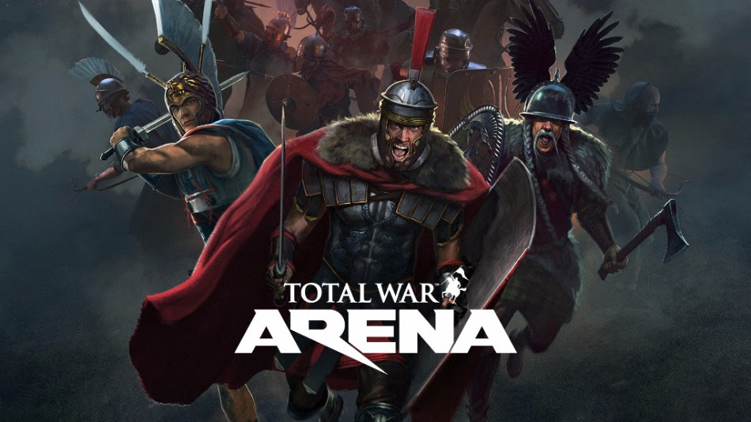
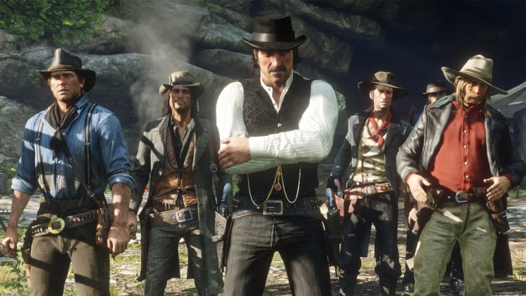
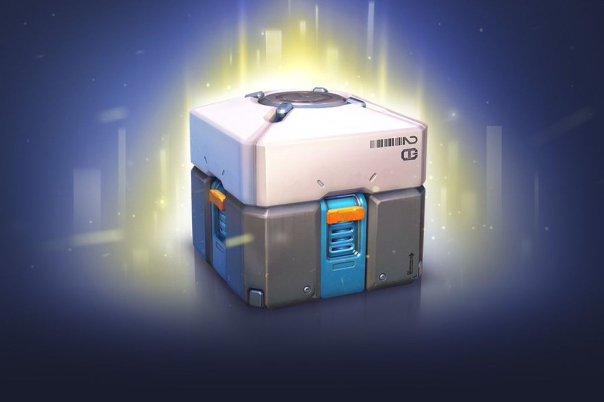
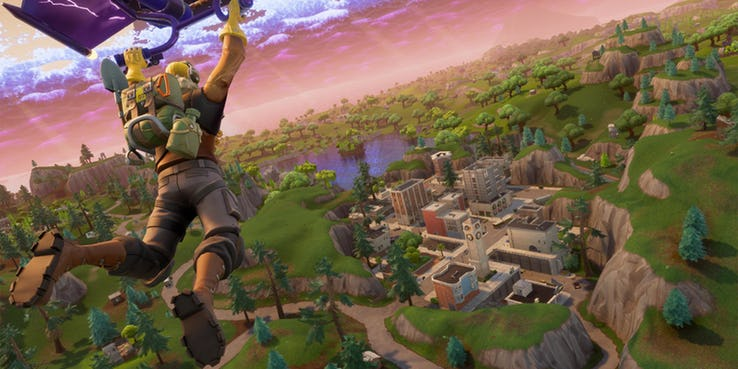

The Daily Game (totally not a "The Daily Mail" rip-off) The Game-Oriented Newspaper is now here!
What's this?
This is a newspaper. Or a newspaper wanna-be. Who reads newspapers on the Internet, anyway? This isn't a casual newspaper, no time for politics or who wore what during some expensive but probably boring event. This is for games. If you are an avid gamer, then congratulations reaching this site; if you have a vague idea about games, eh, maybe you'll find something interesting here. But if you are completely new to games, I'm afraid I'll start speaking some alien language for you pretty soon. But dont' worry! Gabe to the rescue here. I'll try explaining things as much as possible. Formal language will be left aside a bit - who uses formal language when speaking about games? You just can't. It's like trying to be serious during a very important event, but you just remembered that one silly thing you and your mates did, even though you knew it was wrong to do. But I don't judge.
Wait, who's Gabe?
Aw, good question. Before anything else, just let me quickly list these things here:
- Yes, I'm a programmer
- Yes, I'll make games
- No, I have no social life
- Yes, I know I pronounce some words incorrectly
- No, I won't give you free copies of my games when they'll be released, but you can be my Beta Tester
- Yes, I eat a lot
Do you know that guy, sitting at the front, that once won a Menti quiz? Yeah, that's me. (P.S.: That Rolo was so good, thanks Liz!)
I'm a BSc Computer Games Development Year 1 student. Still unsure about my choice, if it was my best or my worst choice in my life so far. We'll see, I'll keep you updated. Rather big, tall, very hard not to notice me. Sometimes I dress casually, sometimes I go crazy and add a shock-factor to my attire. Sometimes I go crazy with the colours too. I'm a little colour blind, but I can clearly distinguish red from green, if Daltonism was the first thing that came in your head when you just read that. Also, if you really want to talk to me, find me right over here on Facebook. If you really want to be more formal, send me an e-mail here. And if you really want to meet me face to face, we can arrange that. I reply quick and I won't leave you on "Seen".
Why "The Daily Game"?
Believe me or not, the title was random. At first, I didn't even think of the well-known "The Daily Mail". The resemblance hit me only after a good amount of time. Because I have very little to none immagination, I kept the name. Too lazy to change it. Now, it may say "Daily", but please don't expect daily news or anything. Even I don't have such high expectations from myself. The Daily Game's purpose is to keep you entertained: we'll talk about games, lots of games, and maybe some hoaxes from the games industry.
Now, entertain yourself. Go on, have fun, find interesting stuff.

Wargaming announcement! TWA is shutting down!
Wargaming and Creative Assembly announced on 22th of November that their game, Total War: Arena will shut down in February.
According to PCGamesN, "Total War: Arena didn't attract enough players for it to be a financially viable project". The reason behind this could also be the fact that many well-known members from the Wargaming company quit in order to focus working on their own projects, including members from Creative Assembly.
"Arena has been on a long journey, and we are thankful to everyone who joined us" wrote Joshua Williams, head of Creative Assembly’s developer communications. “It has been an absolute privilege to work with you all on this project, but unfortunately the results of Arena Open Beta Test did not meet all our expectations.”
It is sad news for people that actually enjoyed playing the game, and for sure it is frustrating for those who not only showed interest in the game, but actually put their time and even money in it. But, TWA will offer goods for other Wargaming games equivalent to the money invested in the game. "We offer Gold equivalent to the amount spent during this exact period because we believe that 3 months is the minimum term for which you can enjoy the purchased items."
More on the matter can be found here: TWA Ceasing Operations.

Red Dead Redemption 2, Online is live!
RDR2 players, hop on the hype train! Online is now here. The so-much-waited Online version of the game has entered Beta on 30th of November, even though Rockstar Games originally said "Red Dead Online" would enter public beta in mid-November. Players also have been warned to expect "some growing pains" early on, according to Business Insider.
Players will be able to explore the world of "Red Dead Online" alone or with friends (too bad I'm so lonely). It's expected to offer a mix of storytelling, competitive, and cooperative gameplay. Buuut, what have we learned from "Grand Theft Auto V Online"? No matter what, no matter where, 10-year old kids will be there to troll you and ruin the day. Also, cheaters will be there to ruin your day, twice. Sooner or later.
"As with most online experiences of this size and scale, there will inevitably be some turbulence at launch," Rockstar said in a September statement. "We look forward to working with our amazing and dedicated community to share ideas, help us fix teething problems and work with us to develop 'Red Dead Online' into something really fun and innovative".
"Fun an innovative", until kids and cheaters appear. Just saying. We'll see. The Hype is real.

Uh-oh! FTC to investigate the loot boxes in games
Loot boxes are, nowadays, in games, something usual. You join a match, play, have fun, and at the end of the match you get rewarded with a loot box, containing goodies for you that help you. Sounds good. It's a reward, after all. Or is it gambling?
There have been some concers about loot boxes, as for some people they are basically gambling. I personally don't see how that can be considered gambling, even though it's about luck and some people pay real money to get more and more loot boxes. Even if it would be gambling, is it the end of the world? After all, it's a choice.
The US Federal Trade Commision will investigate loot boxes, chairman Joseph Simmons told a Senate Commerce Subcommittee on 27th of November. Simmons was asked to begin the investigation by Senator Maggie Hassan, who has previously raised concerns about loot boxes. Hassan asked the Entertainment Software Ratings Board to investigate the way it rates games with loot boxes earlier this year, warning that she’d get the FTC involved if it didn’t. There’s been reluctance from the Entertainment Software Association, however, which oversees the ESRB.
Check this article from PCGamer for more info.

Fortnite wins GotY, but why?
Fortnite just won a Game of the Year title - in 2018. Epic Games' popular multiplayer shooter claimed the crown at the Golden Joysticks, inexplicably beating out Red Dead Redemption 2, a game that many critics believed would be the runaway favorite to sweep up Game of the Year accolades at industry award shows this year. - ScreenRant
There are lots of questions coming from the gaming community world wide, most of them being "Why?", "How is it possible?". The game has become so massively successful that it has genuinely begun to impact industries that are usually adjacent to the video game world. What does that mean? If you ask me, basically, it means that the playerbase of the game will take over the gaming industry. Even though PlayerUnknown's BattleGrounds first had a big impact on the battle royale genre, after H1Z1 was considered obsolete, somehow, this cartoon-ish game Fortnite not only beat PUBG and started a war between the two games' playerbase, but it was declared Game of the Year. Why, you wonder? I wonder too. Well, games are chosen by the players, so the short answer to this is: votes. Fortnite got more votes than any other game, more votes than most anticipated RDR2, especially because it is a Free-to-Play game. Find more here.